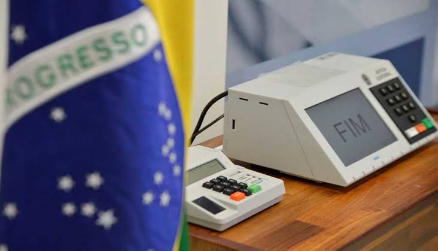

Portal da Política
O jornal do povo
Noticias atuais:
Em Salvador, a preparação é feita no Centro de Apoio Técnico TRE-BA

Fundo eleitoral de 2022 se torna motivo de discussões
Candidatos a deputado federal